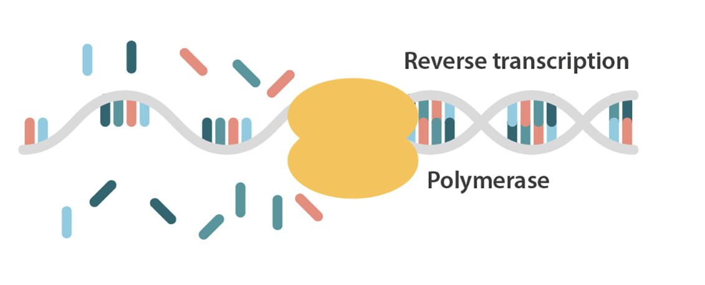
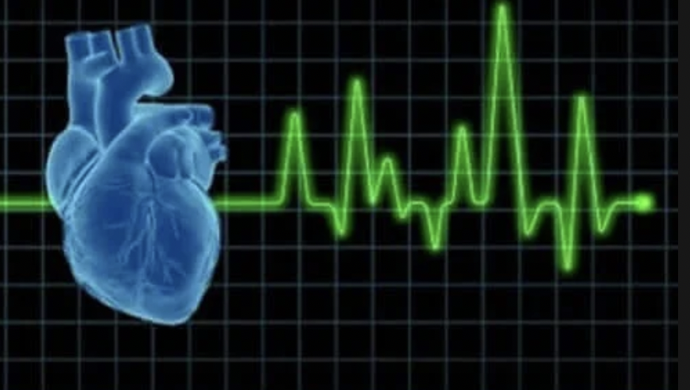
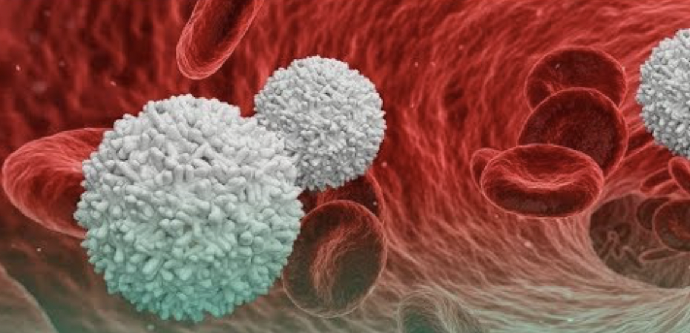
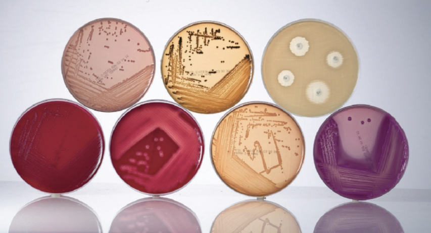
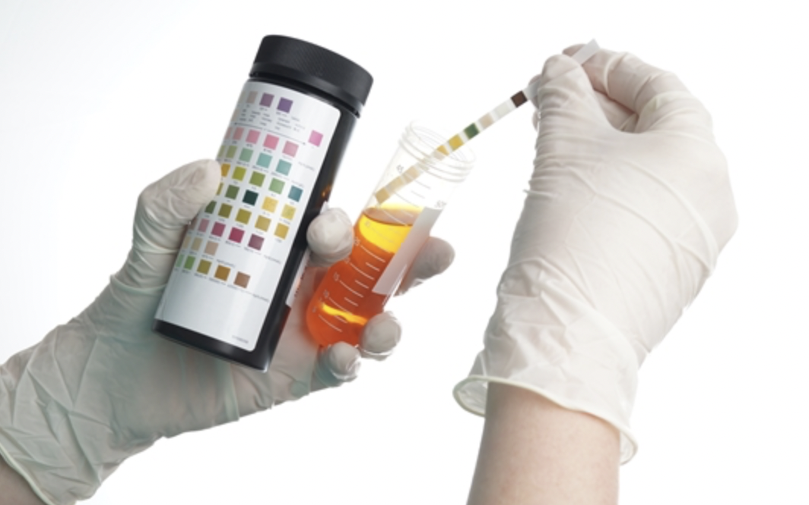

임상병리사
...
주요 업무는 혈액 또는 체액검사, 조직 또는 세포검사 및 생리기능검사 등의 각종 의화학적 검사를 담당하는 의료기사로서 가검물 또는 생체를 대상으로 병리, 생리적 상태를 검사하여 질병의 진단, 예방, 예후 파악 및 치료에 기여하는 직업. 검사용 시약을 조제하고, 혈액을 채혈하거나 제조, 보존하며, 정확한 검사 결과를 도출해 의사에게 제공하기도 한다. 또한 다양한 첨단 의료장비를 사용해야 하므로 여러 기계를 다양하고 능숙하게 다룰 수 있는 능력을 요구한다.
- 
- 
- 
- 
- 
임상병리 검사 종류
western blot
웨스턴 블랏 또는 단백질 면역 블랏은 샘플에서 특정 단백질을 검출하기 위해 사용하는 분자생물학 기술이다. 웨스턴 블랏의 방법은 다음과 같다. 먼저 샘플들을 단백질 변성 후 젤 전기 영동을 거친다.
luciferase assay
루시퍼레이즈(Luciferase)는 루시페린(Luciferin)을 기질(substrate)로 활용하여 빛(발광)을 내는 산화 효소의 총칭이다. 분자생물학에서는 이 빛을 내는(발광하는) 특성을 이용하여 다양한 실험에 활용한다.
ELISA
직접 검출법을 사용하는 ELISA는 분석 플레이트 표면에 직접 또는 포획 항체에 의해 간접적으로 결합한 고정된 항원, 효소에 접합된 항원- 특이적 일차 항체 그리고 검출 기질이 필요합니다. 보다 더 일반적으로 사용되는 간접 검출 형식은 비접합 일차 항체, 일차 항체의 검출에 특이적인 접합된 이차 항체 모두를 포함합니다. 간접 검출법은 접합된 효소 요소가 이차 항체에만 존재하므로 표적 항원과 함께 면역반응성이 증가하여 그 혜택을 봅니다. 직접 및 간접 검출법 이외에도, 포획 또는 “샌드위치” 분석법은 마이크로플레이트 표면에 먼저 부착되고, 이전에 설명한 간접법과 유사한 일차 및 효소-접합 이차 항체 모두를 사용하는 추가적인 항원 포획 항체를 사용합니다.
Whole blood
적혈구 백혈구의 형태학적 또는 혈색소 농도, 혈소판 농도 등 전혈의 기본적인 검사를 진행한다.
biochemical lab
혈액생화학적 검사를 수행한다. 주로 간담도계 효소, 또는 심근경색 표지자, 지질 및 혈청단백 등의 전반적인 인체 상태를 파악하기 위하여 수행하는 경우가 많다.
electronic cardiacgragh
심근경색을 판단하기 위한 기본적인 수단. 심근허혈, 부정맥, 우심증 등을 확인 가능하다. 또한 수술전 검사로 주로 오더가 나온다.
댓글창 구현 예정